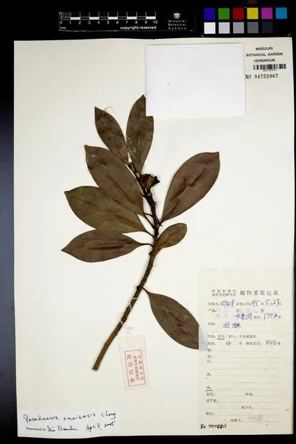

乔木 · 植物界
拟单性木兰 Parakmeria omeiensis

木兰科拟单性木兰属常绿乔木，中国特有，花单性、雌雄异株，野生植株仅见于四川峨眉山，属极危物种。
- 分类
- 门被子植物门纲木兰纲目木兰目科木兰科属拟单性木兰属
- 栖息环境
- 海拔 1000–1500 米的常绿阔叶林，喜温暖湿润、多云雾的气候
- 地理分布
- 中国四川峨眉山，为中国特有种，野生植株极少
- 保护级别
- IUCN 极危（CR）；中国国家一级保护野生植物
物种志
峨眉拟单性木兰为常绿乔木，高可达 20 米，树皮灰白色，小枝具环状托叶痕。叶片革质，倒卵形或椭圆形，长 8–14 厘米，上面深绿色。花单性，雌雄异株，白色、芳香，花被片 9 枚；聚合果卵状圆柱形，成熟时开裂，露出红色种子。
本种为中国特有种，野生植株仅见于四川峨眉山海拔 1000–1500 米的常绿阔叶林中，喜温暖湿润、多云雾的气候与肥沃排水良好的酸性土壤。它花白而香、树形端庄，是木兰科中罕见的单性花类型，对研究木兰科系统演化具有重要价值。由于分布区极窄、野生个体极少，被 IUCN 评估为极危，并列为国家一级保护野生植物。保护区与植物园已开展人工繁育与回归试验。
形态与习性
- 株高可达 20 米，树皮灰白色
- 花期4–5 月，花白色、单性异株
- 果期9–10 月，聚合果开裂露红种
- 光照幼树耐阴，成树喜散射光
- 水分喜湿润多雾，怕干旱与积水
- 保护级别国家一级保护野生植物，IUCN 极危
- 主要用途科研、种质保护与园林观赏
趣味知识
- 拟单性木兰属的花为单性，雌雄异株，这在木兰科中较为罕见。
- 峨眉拟单性木兰的野生植株几乎只分布在峨眉山，是典型的极小种群植物。
- 它被列为国家一级保护野生植物，野外个体数量比大熊猫还要稀少。
- 植物园通过人工授粉与播种繁育，已获得一批实生苗用于回归引种。